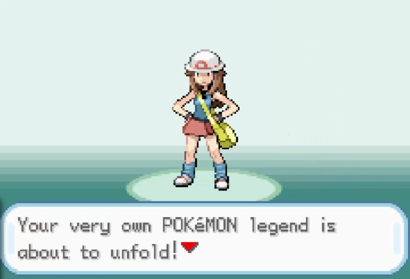
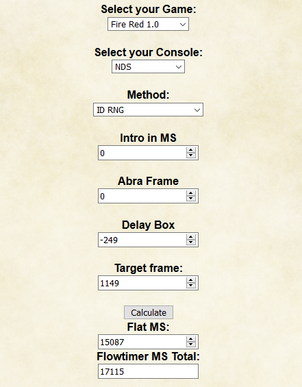
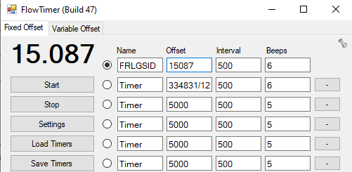
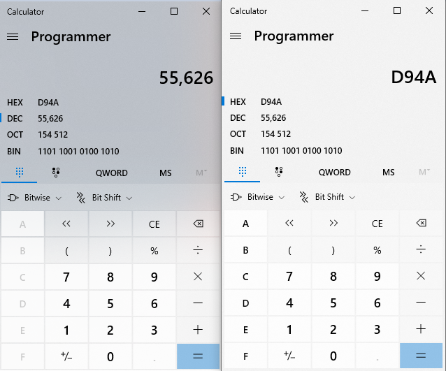
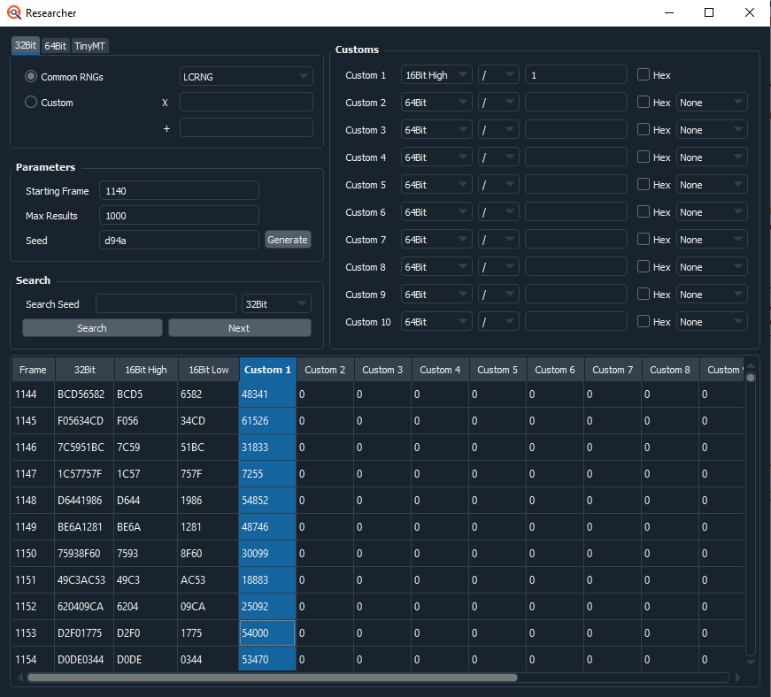
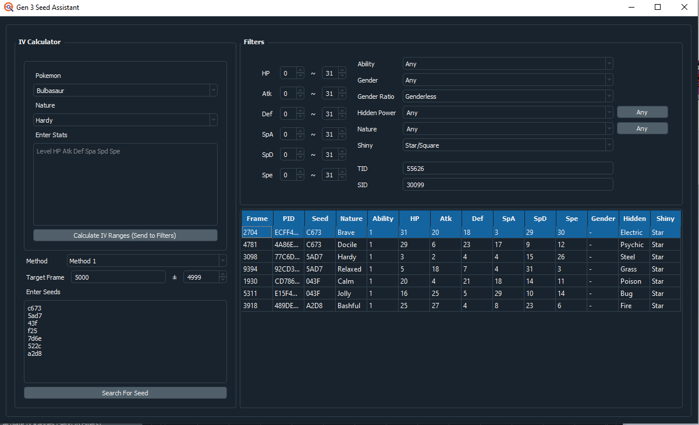
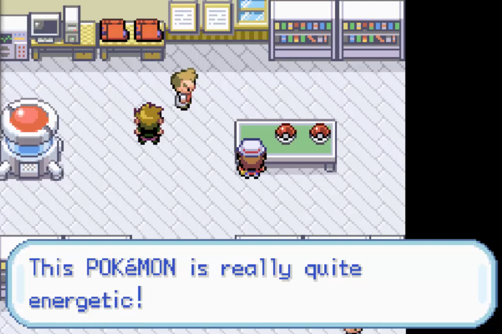
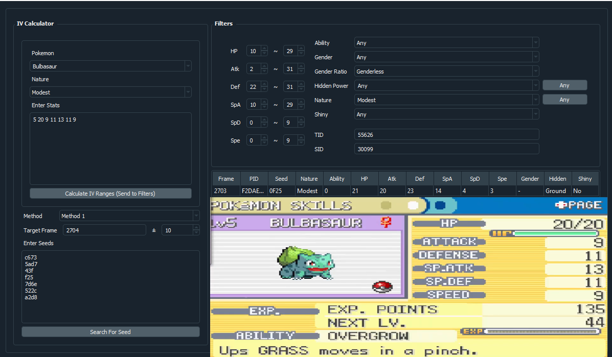
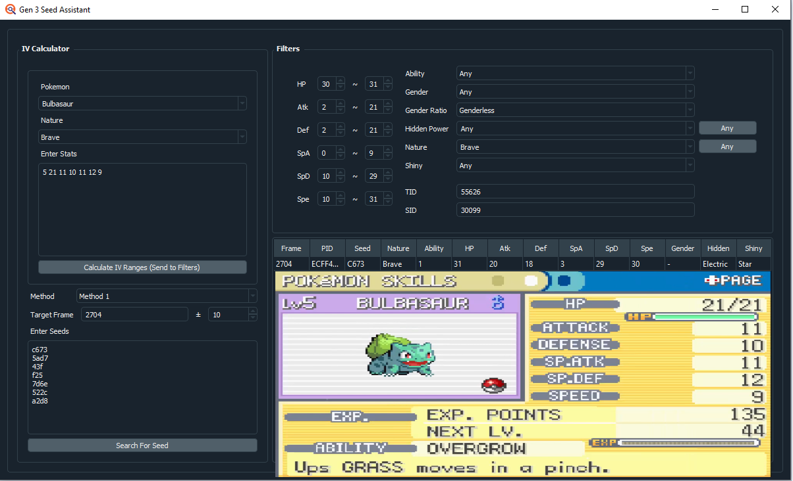
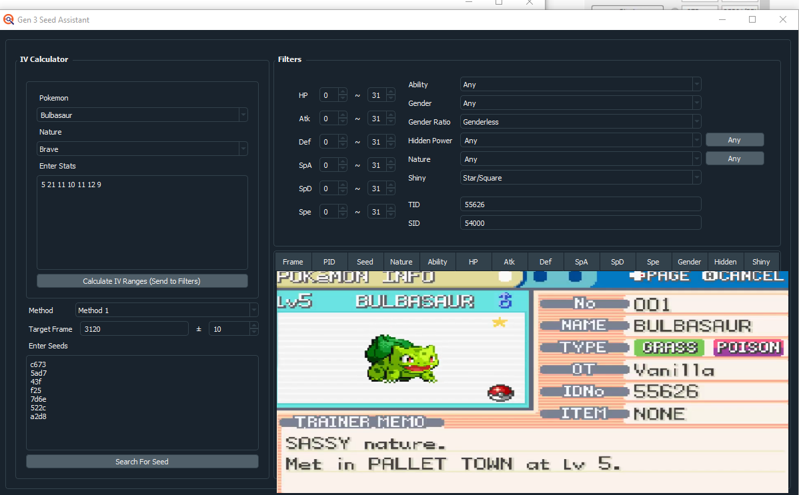

FRLG Starter RNG
- Prerequisits
- Hitting your Secret ID
- Shiny Starter
- Notes and Conclusions
Guide Navigation
Text Guide
In this guide I'll show you how to manipulate a shiny starter in Pokemon Fire Red or Leaf Green. This is a more advanced guide than other Gen 3 things, so I don't reccomend attempting it until you have a basic understanding of Gen 3 and FRLG Rng in general. You will be expected to know how to hit initial seeds, and how to hit your target frame.
The way this RNG Manip works is we aim for a specific frame for our SID, then repeatedly check Shiny frames on the Starter Pokemon until we find a match, so this can be a time consuming and tedious process.
Prerequisits
Pokemon FRLG: You must set the language to fast and know the version. For LG, the version doesn't matter. To know the version of FR, watch the intro. If the word "Presents" appears under the Gamefreak logo, you have 1.1. If not, it's 1.0.
Calibrated Seeds: You must have a list of calibrated seeds for your games version and language. A list of English seeds can be found here: Gen 3 Seeds
A Programmer Calculator: You can just use the calculator in Windows, click the menu in the top left, and click Programmer there.
Tools:
Hitting your Secret ID
During the start of a new game file in FRLG, the RNG moves much quicker than normal, and it becomes near impossible to hit your initial seed(This would require 3 frame perfect inputs for TID alone, and 4 if you want TID+SID). However, your TID is actually what the initial seed is. Using this information, we can reverse calculate what our secret ID is using what TID we got, we just have to aim for a specific frame. The SID is generated 249 frames after you press A on this screen in the English versions:
It is different amounts of frames in other languages, but research has not been done on all of them. In italian it's 236 frames on the fast speed setting, and in Japanese it's 201 frames. Thanks to PapaJefe and Diance for these numbers.
So pick a relatively high frame, around 1000~ to aim for a SID. You won't know what the SID will be until after the RNG is done, but you will have a general frame range of where you could have landed. Open flowtimerconverter, select your game and console, and put SID as the Method. If you're using a non-english version, change the delay box value to match your language here as a negative number. If it's an English copy, leave it as-is. Then put the target frame of yours into the "Target Frame" Box. I will aim for frame 1149. It should look like this:
Then, copy the value that says "Flat MS" and paste it into flowtimer.
Once the value is pasted into flowtimer, what you do is reset the game, select "New Game", and play up until the name entry screen. Here, type your name out and hover over the Ok button. Hit Start on flowtimer and Ok on your game at the same time on this screen, the get through the rest of the intro to the final screen as fast as possible. Once at the final screen, once flowtimer finishes its countdown, hit A to start the game.
At this point, check your Trainer ID. In DEC mode on the Programmer Calculator, type the TID. Then, click the HEX button to see what your initial seed was, like this.
On the left is my TID, on the right is its value as a HEX Seed.
Now, we open PokeFinder, click the tools dropdown, and click researcher. We will use this tool to list a series of potential SIDs for us. Leave the tab on 32Bit and the Common RNGs as LCRNG. In the Customs section, set Custom 1 to 16Bit High, and type 1 in the right-most box. Then, in the paremeters section, set your starting frame to around 10~ before your target frame. In my case, it's 1140 because my target frame was 1149. Then set max results to 1000, and in the Seed box, type the HEX version of your TID. In my case, it's D49A. Yours will most likely be different. Then, hit generate. Once generated, scroll down to your target frame. The "Custom 1" section is a list of SIDs depending on the frame you've hit. If I hit exactly frame 1149, my SID would be 24497. Since the SID value is not visible to us, what we do is figure out what our SID is by RNGing the starter assuming the SID is one of the values shown here.
Here is how my Researcher looks as a reference.
Shiny Starter
The way this process works is as follows:
Step 1: Open Gen 3 Seed Assistant, set Shiny to "Star/Square", and type your TID in the TID Box.
Step 2: For SID, pick a SID from the list we generated in researcher. The first one I'll choose to pick is frame 1150. This is a SID of 30099.
Step 3: Then, set the Method to Method 1, the target frame to 5000, and the +- to 4999.
Step 4: In the "Enter Seeds" box, put all of your common seeds for a given intro timer length and hit generate. Gen 3 Seed Assistant will show you a list of potential shiny frames on all the seeds you put in ranging from frame 1-10,000.
Step 5: At this point, you pick a frame you wish to aim for, and try to hit it. I'll be aiming for the Brave Shiny frame on frame 2704 Seed C673, since that's one of my most common seeds on these settings.
Step 6: Now, set up flowtimerconverter as normal for FRLG RNG. Set your Intro in MS to your setting for that seed, Leave the method as 1/2/4, and the delaybox at -20, and set your Target frame to your target frame. This time, though, copy the "Flowtimer MS Total" value into flowtimer.

Step 7: So, now you set the target frame to what your target frame is, +- 10 frames. Change shiny to "Any", and change the gender ratio to 87.5/12.5 male to female. Leave the seed and method boxes alone. Then, when you receive a Pokemon, type its stats into the IV Calculator part of Gen 3 Seed Assistant, and hit Search for Seed to see what seed and frame you've hit. If you miss your target frame/seed, put what frame you hit into the "Frame Hit" Box on flowtimerconvert and hit calculate. It will adjust your target MS for you, and paste that new value into flowtimer, and retry until you hit your target frame.
This is the text you hit A on to receive the Pokemon when flowtimer ends, after the Yes/No Box
Here is an image of me hitting a Modest Bulbasaur on frame 2703 on seed F25, I simply typed the stats and nature into the IV calculator to learn what frame I've hit.
Step 8: If you hit the correct frame and got a shiny, great! You know what your SID is and have a shiny, you're done, but if not, we have to adjust.
Step 9: So, here is me hitting my target frame but not getting the shiny.
As you can see, this was my target and with the SID I tried, it would have been shiny, but it's not. So what we do in this scenario, is take a look back at researcher, and try to use a SID 1 frame below or above the frame we tried to hit. And if you fail again, you do the same thing, go one more above or below. I would do this to about 10 frames early to 10 frames late, and if you find nothing, re-try for a new SID and be more mindful of your timing.
Here is my successful attempt:
If you notice, my SID was on frame 1153, which means I was 4 frames late from my target. So it can take a fair bit of time before you find what SID you aim for, but with patience, you'll be able to both know your SID and find a shiny starter! Good luck!
Notes and Conclusions
This RNG may seem complicated at first, but it's really very simple. The difficult part is how tediuous and time consuming it is. You usually have to hit your target frame at least 3-5 times if you're lucky and precise with your SID frame.
Thank you for reading, I hope you succeed in getting your Pokemon. If you have any questions feel free to ask me on Twitter @im_a_blisy or join my discord. https://discord.gg/QchhXQv If you speak another language other than English fluently, and would like to translate this guide, please, contact me and I'd love to help :D